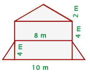
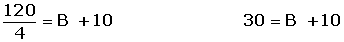
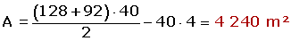

Problemas de áreas de polígonos
1 Un campo rectangular tiene 170 m de base y 28 m de altura. Calcular:
A Las hectáreas que tiene.
B El precio del campo si el metro cuadrado cuesta 15 €.
2 Calcula el número de baldosas cuadradas, de 10 cm, de lado que se necesitan para enlosar una superficie rectangular de 4 m de base y 3 m de altura.
3 Hallar el área de un triángulo rectángulo isósceles cuyos lados miden 10 cm cada uno.
4 El perímetro de un triángulo equilátero mide 0.9 dm y la altura mide 25.95 cm. Calcula el área del triángulo.
5 Calcula el número de árboles que pueden plantarse en un terreno rectangular de 32 m de largo y 30 m de ancho si cada planta necesita para desarrollarse 4 m2.
6 El área de un trapecio es 120 m2, la altura 8 m, y la base menor mide 10 m. ¿Cuánto mide la otra base?
7 Calcular el área de un paralelogramo cuya altura mide 2 cm y su base mide 3 veces más que su altura.
8 Calcula el área de un rombo cuya diagonal mayor mide 10 cm y cuya diagonal menor es la mitad de la mayor.
9 En el centro de un jardín cuadrado de 150 m de lado hay una piscina también cuadrada, de 25 m de largo. Calcula el área del jardín.
10 Calcula el área del cuadrado que resulta de unir los puntos medios de los lados de un rectángulo cuya base y altura miden 8 y 6 cm.
11 Cuánto vale el área de la parte subrayada de la figura, si el área del hexágono es de 96 cm2.
12 Una zona boscosa tiene forma de trapecio, cuyas bases miden 128 m y 92 m. La anchura de la zona mide 40 m. Se construye un paseo de 4 m de ancho perpendicular a las dos bases. Calcula el área de la zona arbolada que queda.
13 Un jardín rectangular tiene por dimensiones 30 m y 20 m. El jardín está atravesado por dos caminos perpendiculares que forman una cruz. Uno tiene un ancho de 8 dm y el otro 7 dm. Calcula el área del jardín.
14 Dado el cuadrado ABCD, de 4 m de lado, se une E, punto medio del segmento BC, con el vértice D. Calcular el área del trapecio formado.
15 Calcula la cantidad de pintura necesaria para pintar la fachada de este edificio sabiendo que se gastan 0.5 kg de pintura por m2.

16 Hallar el perímetro y el área de la figura:

- 1
- 2
- 3
- 4
- 5
- 6
- 7
- 8
- 9
- 10
- 11
- 12
- 13
- 14
- 15
- 16
Ejercicio 1 resuelto
Un campo rectangular tiene 170 m de base y 28 m de altura. Calcular:
A Las hectáreas que tiene.
A = 170 · 28 = 4 760 m²
4 760 : 10 000 = 0. 476 ha
B El precio del campo si el metro cuadrado cuesta 15 €.
4 760 · 15 = 71 400 €
Ejercicio 2 resuelto
Calcula el número de baldosas cuadradas, de 10 cm, de lado que se necesitan para enlosar una superficie rectangular de 4 m de base y 3 m de altura.
AS = 4 · 3 = 12 m2 = 120 000 cm²
AB = 10 · 10 = 100 cm2
120 000 : 100 = 1 200 baldosas
Ejercicio 3 resuelto
Hallar el área de un triángulo rectángulo isósceles cuyos lados miden 10 cm cada uno.
A = (10 · 10) : 2 = 50 cm2
Ejercicio 4 resuelto
El perímetro de un triángulo equilátero mide 0.9 dm y la altura mide 25.95 cm. Calcula el área del triángulo.
P = 0.9 dm = 90 cm
l = 90 : 3 = 30 cm
A = (30 · 25.95) : 2 = 389.25 cm2
Ejercicio 5 resuelto
Calcula el número de árboles que pueden plantarse en un terreno rectangular de 32 m de largo y 30 m de ancho si cada planta necesita para desarrollarse 4 m2.
A = 32 · 30 = 960 m2
960 : 4 = 240 árboles
Ejercicio 6 resuelto
El área de un trapecio es 120 m2, la altura 8 m, y la base menor mide 10 m. ¿Cuánto mide la otra base?

Ejercicio 7 resuelto
Calcular el área de un paralelogramo cuya altura mide 2 cm y su base mide 3 veces más que su altura.
h = 2 cm
b = 2 · 3 = 6 cm
A = 2 · 6 = 12 cm2
Ejercicio 8 resuelto
Calcula el área de un rombo cuya diagonal mayor mide 10 cm y cuya diagonal menor es la mitad de la mayor.
D = 10 cm
d = 10 : 2 = 5 cm
A = (10 · 5) : 2 = 25 cm2
Ejercicio 9 resuelto
En el centro de un jardín cuadrado de 150 m de lado hay una piscina también cuadrada, de 25 m de largo. Calcula el área del jardín.
AP = 252 = 625 m2
AJ = 1502 − 625 = 21 875 m2
Ejercicio 10 resuelto
Calcula el área del cuadrado que resulta de unir los puntos medios de los lados de un rectángulo cuya base y altura miden 8 y 6 cm.
Ejercicio 11 resuelto
Cuánto vale el área de la parte subrayada de la figura, si el área del hexágono es de 96 cm2.
96 : 6 = 16 cm2
16 · 2 = 32 cm2
Ejercicio 12 resuelto
Una zona boscosa tiene forma de trapecio, cuyas bases miden 128 m y 92 m. La anchura de la zona mide 40 m. Se construye un paseo de 4 m de ancho perpendicular a las dos bases. Calcula el área de la zona arbolada que queda.
AZ = ATrapecio − ACamino

Ejercicio 13 resuelto
Un jardín rectangular tiene por dimensiones 30 m y 20 m. El jardín está atravesado por dos caminos perpendiculares que forman una cruz. Uno tiene un ancho de 8 dm y el otro 7 dm. Calcula el área del jardín.
8 dm = 0.8 m
h = 20 - 0.8 = 19.2 m
7 dm = 0.7 m
b = 30 - 0.7 = 29.3 m
AJ = 19.2 · 29.3 = 562.56 m2
Ejercicio 14 resuelto
Dado el cuadrado ABCD, de 4 m de lado, se une E, punto medio del segmento BC, con el vértice D. Calcular el área del trapecio formado.
Ejercicio 15 resuelto
Calcula la cantidad de pintura necesaria para pintar la fachada de este edificio sabiendo que se gastan 0.5 kg de pintura por m2.
Ejercicio 16 resuelto
Hallar el perímetro y el área de la figura:
AD = BC; AB = DC  Romboide
Romboide
P = 13 + 11 + 12 + 5 + 11= 52 cm
A = A R + A T
A = 11 · 12 + (12 · 5) : 2 = 162 cm2
 Ejercicios
Ejercicios